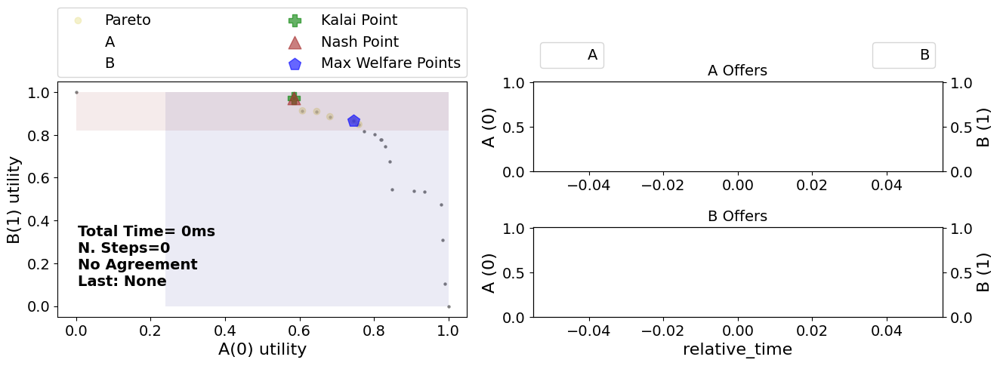

Visualizing preference profiles
In ANL 2024, different types of scenarios are used, see the detailed description of ANL 2024 for more information. In this notebook, we will provide some code to visualize the different types.
from negmas import SAOMechanism
from anl.anl2024 import zerosum_pie_scenarios, monotonic_pie_scenarios, arbitrary_pie_scenarios
scenario = monotonic_pie_scenarios(n_scenarios=2, n_outcomes=20)[0] #zerosum_pie_scenarios, arbitrary_pie_scenarios
session = SAOMechanism(issues=scenario.issues, n_steps=30)
A_utility = scenario.ufuns[0]
B_utility = scenario.ufuns[1]
#visualize((session, A_utility, B_utility))
In the first line, we generate a monotonic_pie_scenario (or actually 2), which is one of three types of scenarios. The other two are zerosum_pie_scenarios and arbitrary_pie_scenarios. After extracting the corresponding utility functions, we can visualize the session in the same way we did in the previous notebook (running a negotiation).
For completeness, we provide the code for the visualize function below. By removing the session.run statement, it is possible to see the scenario plotted, without a negotiation taking place. This is useful to see the shape of the scenario, and to understand the preferences of the agents.
from anl.anl2024.negotiators import Conceder, Boulware
def visualize(negotiation_setup):
(session, A_utility, B_utility) = negotiation_setup
# create and add selller and buyer to the session
AgentA = Boulware(name="A")
AgentB = Boulware(name="B")
session.add(AgentA, ufun=A_utility)
session.add(AgentB, ufun=B_utility)
# run the negotiation and show the results
# session.run()
session.plot(ylimits=(0.0, 1.01), show_reserved=True)
plt.show()
visualize((session, A_utility, B_utility))
